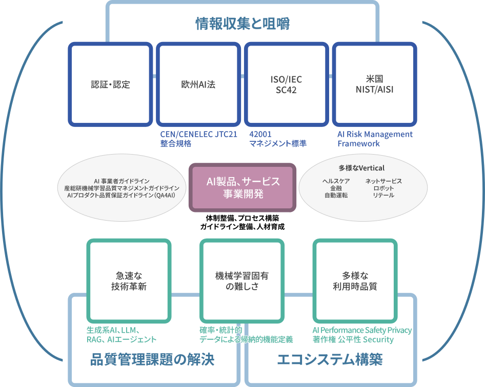
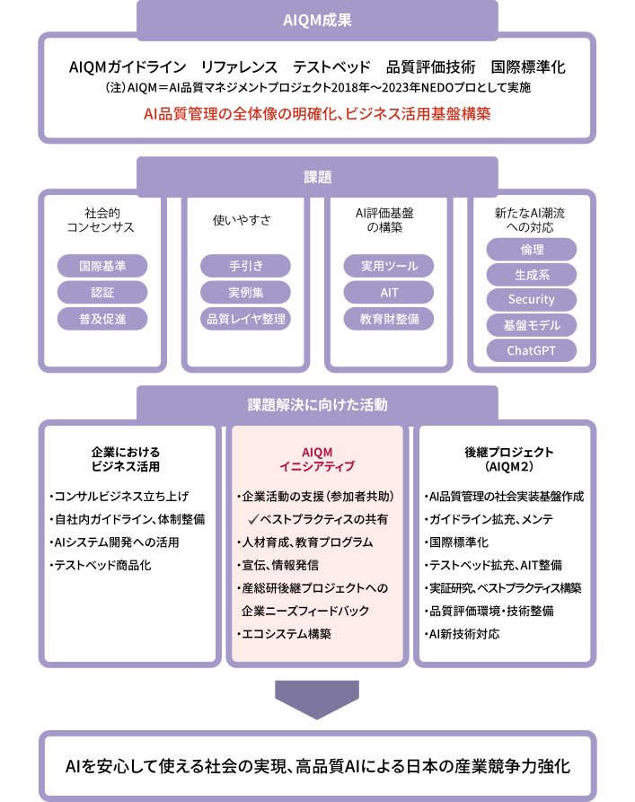
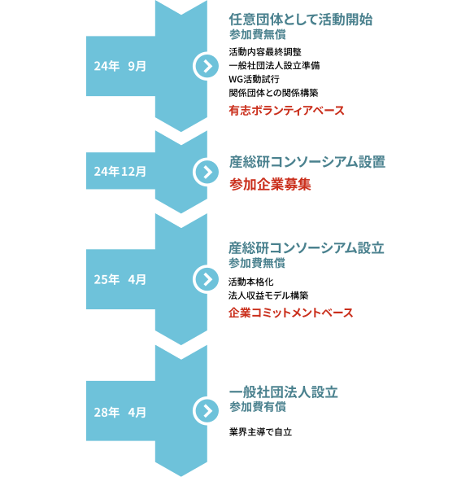
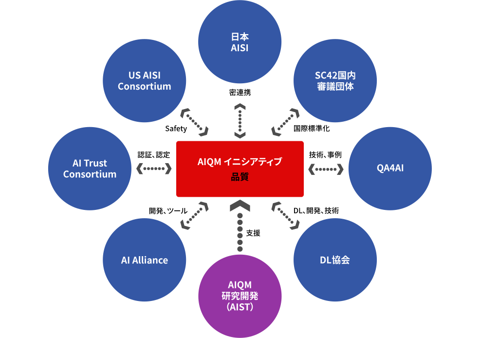

Consortiumコンソーシアム趣旨
設置の背景・経緯・狙い
- 急激に拡大するAIビジネスを取り巻く環境の変化は激しく、欧州AI法案やISO/IEC42000シリーズ制定など種々の規制や標準開発とともに、AIセーフティーの確保に向けた国際連携の動きが加速するなど、AIを活用したグローバル事業を手掛ける企業にとって、その品質マネジメントの重要性は高まる一方である。
- 産総研では2018年より、AI品質マネジメントに関する研究開発に取り組み、「機械学習品質マネジメントガイドライン」の策定など多くの成果を挙げてきた。
- また、2017年にISO/IEC/JTC1/SC42（AI）が設立されて以来、国内審議団体のとりまとめや各種重要規格開発を主導し、国際標準化コミュニティーにおける日本のプレゼンスを高めてきた。
- AIビジネスには国内に業界団体がなく、協調領域の互助や国際標準化への業界意見のとりまとめなどを行う組織が必要。これはAI事業を統括するMETI商情局情報産業課の意見とも合致している。
- 激変するグローバルAIビジネスの事業環境への対応など、協調領域について参加企業の連携を助け、それを産総研が支援することを目的として、「AI品質マネジメントイニシアティブ」を産総研コンソーシアムという形で立ち上げることとしたので、興味のある企業の参加をお願いしたい。
AIビジネス遂行におけるAI品質マネジメントの課題

産総研のこれまでの実績と強み
AIQM（AI品質マネジメントプロジェクト）2018年～
- 機械学習品質マネジメントガイドライン
✔️ 2020年第1版～2024年第4版 、英語版第1版～第3版
✔️ ISO/IEC TR5469（AI機能安全）に内容を盛り込む - リファレンスガイド、品質アセスメントシート
- テストベッドQunomonの開発と公開
- 各種品質評価技術開発
AI国際標準化活動
- SC42国際標準化活動（コンビナー、エキスパート、エディタ、国内審議団体、ロビーイング）
- CEN-CENELEC オブザーバ参加、AI Trust Consortium参加
- 米国NIST MOUによる密連携
- 各種イベント開催（2024年7月：人工知能標準化国際シンポジウム）
- 各種プロジェクト主導（Human Machine Teaming, Human Oversight、AIデータ品質管理など）
産総研の強みを活用した業界団体の開設
イニシアティブの活動予定
2024年12月に産総研コンソを設置。2025年2月から参加募集を開始し、2025年4月を目途に産総研コンソとして活動開始予定



参加のメリット
- AI事業遂行に必要な先端情報が収集できる。
- 法制度、認証制度など、AI事業遂行のために何をするべきか、どうやれば良いかが分かる。
- 日本AISIとの太いパイプを通じて、国際AI規制コミュニティに提言できる。
- 品質評価について、どこまでやれば良いかの落としどころを、一社で悩まなくてよくなる。
- 品質マネジメントについて、真剣に取り組んでいることを顧客にアピールできる。
- 協調領域での協力により、競争領域にリソースを集中できる。
- AIビジネスエコシステムに参加することで、事業拡大のためのプロモーションチャネルが得られる。